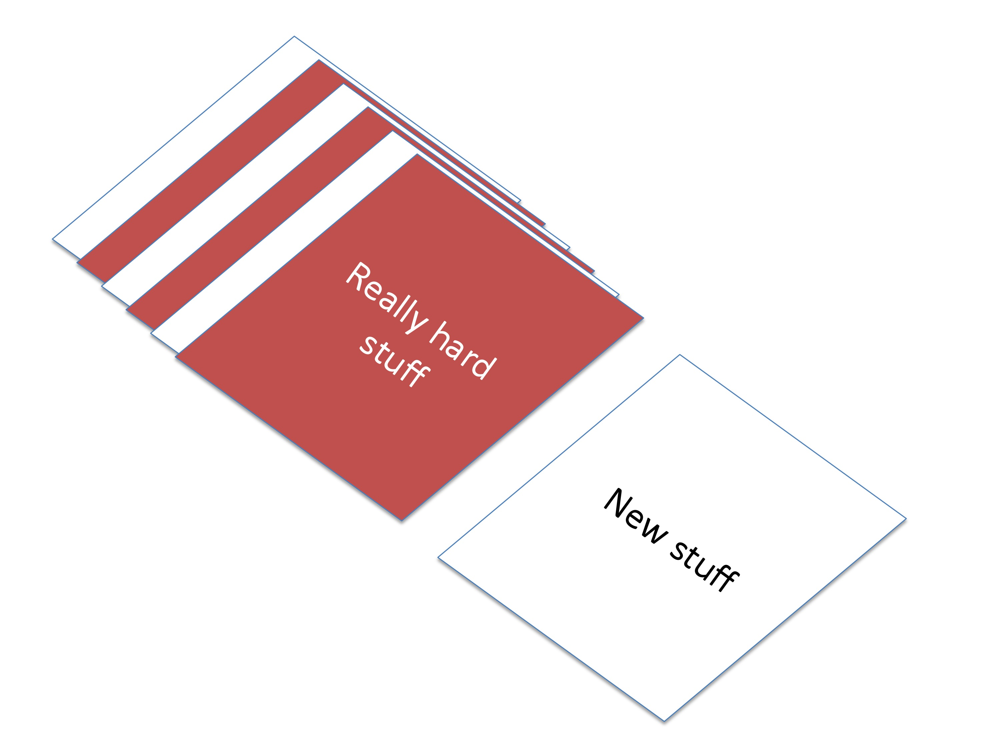

Learning how to learn: Ideas about studying for my courses
A university education will hopefully give you the skills to become a professional learner. Even as a professor, a considerable portion of my day is spent learning new things. Knowing how to learn is, I believe, the most valuable skill I possess, and is therefore the one I most want to teach you. For example, during the last two years I learned some concepts in the field of combinatorics (Cuddington et al. in press), learned how to parametrize demographic population models (Cuddington et al. 2014), taught myself how to use the statistical platform R, learned how to do sophisticated analyses in this platform from a MOOC sequence on data science, and taught myself how to use the program ArcGis (Cuddington et al., in prep). On the non-professional side I learned how to play the bass guitar, how to ride a recumbant bike, how to curl, and how to scull.
|
Writing it all down makes me feel amazing! Learning is one sure way to make life interesting and invigorating. Moreover, professional learning makes me current in my field, and able to apply exciting new techqniues (and old ones I didn't know about) to my research. But does all this learning this mean I am some kind of genius? Not at all. I would describe myself as an average learner, who is frequently disappointed in my progress. |
My first ArcGis map! |
My first regatta! |
On this page I would like to share three ideas about learning that I came accross recently in an online course entitled Learning how to Learn taught by Barbara Oakley. It is my hope that these ideas will help you succeed both in my courses, and in all your other learning tasks. Some of these concepts I already employ in my own learning, others were unknown me before I took the Learning how to Learn course. The three ideas I will describe here are: deliberate practice, interleaving and procrastination. Let's begin with a definition of each one. |
Deliberate practice
Deliberate practice is best described as those activities that allow you to learn those things that you most need to learn and find most difficult. Karpicke and coauthors (2009) found that most students study by rereading rather than using recall and mini-testing exercises. Unless you are going to be asked to simply read during an exam, it would not be wise to use this as your only studying technique. It would be much better to: 1. practice writing down answers to potential exam questions and 2. spend the most time answering those questions that deal with material you find difficulty. Duke and coauthors (2009) suggest that the best musicians focus on practicing difficult chunks of the music, and that the quality of their subsequent performance is more related to how they practiced rather than to how much time spent practicing. Similarly, you need to practice what you will be asked to do and focus on those parts of the material that are most challenging.
Interleaving
Interleaving is the practice of studing older or different material mixed in with the material you are currently working on. Rohrer and coauthors (2014) found that mathematics students who studied using interleaving outperformed students who used a more typical arrangement of doing only problems related a single concept in a single study session. For example, while studying your most recent course material, you might include self-test questions that relate to material that was presented several weeks ago, particularly if you found this material quite difficult.

Procrastination
We all know what procrastination is: delaying an activity that needs to be completed becuase we find it unpleasant. Lyons and Beilock (2012) report that those students who find mathematics difficult feel a strong reluctance to start studying. In fact, the odd thing about procrastination is that we need not even have a strong antipathy to the activity in question, a vague disinclination is quite sufficient to trigger procrastination. Your mind seeks a more pleasant alternative to even mildly distateful tasks and so you end up browsing the web, chatting with friends, or getting something to eat.
How does this topic relate to our previous two, which seem to be about specific learning techniques? In your studies procrastination is a problem if it prevents you from keeping up with your learning. Often students who have difficulty with procrastination attempt to learn all the material required to do well on an exam the night before! 'Cramming' is almost never a successful strategy. For example, Rohrer and Taylor (2007), studied the performance of groups of students that tackled 4 practice problems either divided across two sessions separated by one week, or in a single session. When tested one week later, those students that used two short study sessions outscored those that used one long session (74% vs. 49%). Furthermore, students that used one long session did not have significantly higher scores than another group of students that used a single short study session (49% vs. 46%).
Procrastination is a problem for everyone, but there are some simple and pretty effective techniques to deal with it. One great technique is to set a timer for a short period of time, say 25 minutes, and commit to studying for just this short period of time. If 25 minutes seems too long try 15 or even 10 minutes. You can do almost anything if you are only going to do it for 10 minutes. In fact, you'll probably find that after you start studying, its a lot easier to keep going. However, don't overdo (see above about using shorter spaced study sessions)
Putting it all together: A study strategy for my coures
So how should one study for my coures? Putting these three ideas together we can formulate an effective strategy.
- Start early, and use multiple sessions spaced out in time rather than a single long study session
- If you are having trouble starting at all, use very short timed sessions to get over your initial reluctance and overcome procrastination
- During study, focus on practicing those things you will be asked to do (e.g., calculating answers) rather than on rereading your notes and the textbook. Formulating your own exam questions is often very useful. Answering these self-test questions is even more helpful
- Devote a portion of your study time to working problems that deal with concepts you learned earlier. It is particularly helpful to mix in older problems and concepts that you found difficult.
Literature cited
- Cuddington, K., Hull, Z.T., Currie, W. and M. Koops. Landmarking and strong Allee thresholds. Theoretical Ecology, in press.
- Cuddington, K., Currie, W. and M. Koops. (2014) Could an Asian carp population establish in the Great Lakes from a small introduction? . Biological Invasions 16:903-917.
- Duke, R. A., Simmons, A. L., & Cash, C. D. (2009). Journal of Research in Music Education, 56(4), 310-321.
- Karpicke, J. D., Butler, A. C., & Roediger III, H. L. (2009). Memory, 17(4), 471-479.
- Keresztes, A., Kaiser, D., Kovács, G., & Racsmány, M. (2013). Cerebral Cortex, bht158.
- Lyons, I. M., & Beilock, S. L. (2012). When math hurts: math anxiety predicts pain network activation in anticipation of doing math. PloS one, 7(10), e48076.
- Rohrer, D., & Taylor, K. (2007). The shuffling of mathematics practice problems improves learning. Instructional Science, 35, 481-498.
Image credits
- Cuddington, K. 2014